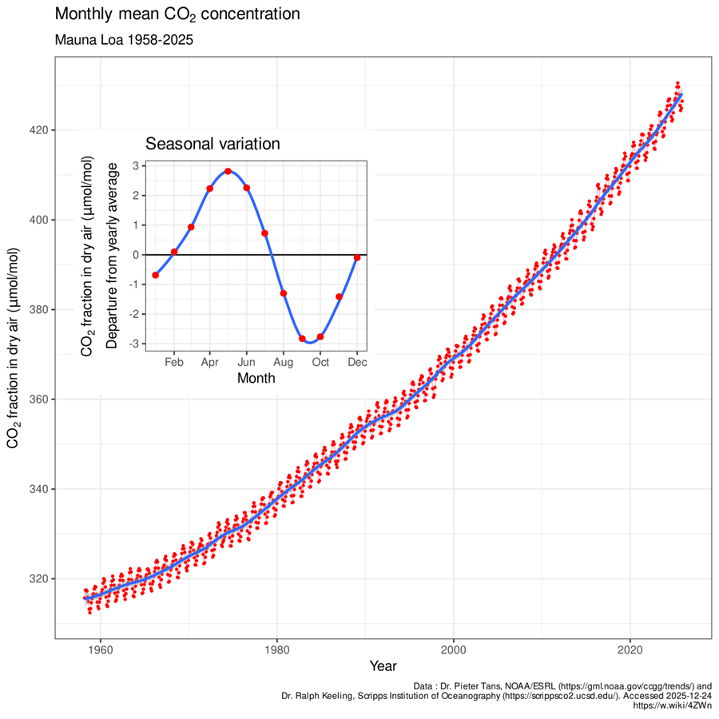

Themes › Theme B The particulate nature of matter
B.2Greenhouse effect
Without its atmosphere, the Earth's average surface temperature would be about −18 °C, and most of its water would be frozen. This topic uses the radiation laws from B.1 to model the Earth as a system: energy arrives from the Sun, some is reflected, and the rest must eventually be radiated back to space. Greenhouse gases slow that escape, keeping us warm, and human activity is strengthening the effect. There is no additional HL content in B.2.
Knowledge and science
Nature of science
Models. On this page we treat the Earth as a single black or grey body with one temperature. Real climate models split the atmosphere, oceans and ice into millions of cells and run on supercomputers. Both are models: the simple one shows the main idea, and the complex ones make detailed predictions that are tested against new observations.
Evidence. In 1856 Eunice Foote showed that a glass cylinder of carbon dioxide warmed more in sunlight than one of ordinary air, and in 1859 John Tyndall measured how strongly different gases absorb infrared. Since 1958, careful measurements at Mauna Loa in Hawaii have recorded a steady rise in atmospheric CO2.
Shared endeavour. The Intergovernmental Panel on Climate Change (IPCC) brings together thousands of scientists from around the world to review the evidence. Its reports are checked line by line before they are published.
Global impact. Rising temperatures, melting ice and rising seas affect every country, but not equally. Decisions about energy and emissions now involve physics, economics, politics and ethics together.
ToK: questions to think about
- When scientists disagree, how do we decide? Climate scientists agree that human activity is warming the planet, but they still debate how fast and by how much. How should the public judge between competing predictions?
- How far can we trust a model of the future? A prediction for the year 2100 can't be checked until 2100. What makes a model believable before its predictions can be tested?
- Is a simple model wrong, or just incomplete? Treating molecules as balls on springs explains why CO2 absorbs infrared, but the "real" explanation uses quantum energy levels. Can two different models both be valid?
- Who should decide what to do? Physics can predict the effects of emissions, but it can't say how to share the cost of cutting them. Where does scientific knowledge end and ethical or political judgement begin?
1. Energy balance
The principle behind this whole topic is the conservation of energy. A planet is constantly receiving energy from its star and constantly radiating energy into space.
- If it absorbs energy faster than it radiates it, its internal energy increases and it warms up.
- As it warms, it radiates more (remember $L = \sigma AT^4$), until the outgoing power equals the incoming power.
- The planet is then in radiative equilibrium, and its temperature stays constant.
2. Emissivity
A black body (B.1) is a perfect emitter. Real surfaces emit less than a black body at the same temperature. We compare them with a black body using the emissivity $e$:
So the power radiated by a surface of area $A$ is $P = e\sigma AT^4$. Emissivity has no units and lies between 0 and 1: $e = 1$ for a black body, and a surface that emits less than a black body is sometimes called a grey body.
Good emitters are also good absorbers, so a surface's emissivity also tells you what fraction of incoming radiation it absorbs (at the same wavelengths). Typical values: polished silver about 0.02, white paint about 0.9 in the infrared, human skin about 0.98, and soot or charcoal about 0.95.
Worked example: a radiator panel
A painted radiator panel has a surface area of 1.2 $\text{m}^2$, a temperature of 60 °C and an emissivity of 0.90. Find the power it radiates.
Hint: A real surface radiates less than a black body, so use $P = e\sigma AT^4$. Which temperature scale must $T$ be in?
$T = 60 + 273 = 333$ K.
$P = e\sigma AT^4 = 0.90 \times 5.67 \times 10^{-8} \times 1.2 \times 333^4 = 750$ W.
It also absorbs radiation from the room around it, so the net power it loses by radiation is smaller than this.
3. Albedo
When sunlight reaches a planet, some of it is reflected or scattered straight back into space without warming anything. The albedo $\alpha$ measures how much:
Albedo has no units and lies between 0 (absorbs everything) and 1 (reflects everything). The fraction absorbed is $1 - \alpha$.
| Surface | Typical albedo |
|---|---|
| fresh snow | 0.8–0.9 |
| thick cloud | 0.6–0.8 |
| sea ice | 0.5–0.7 |
| desert sand | 0.4 |
| grassland | 0.25 |
| forest | 0.1–0.15 |
| ocean (Sun high in the sky) | 0.06 |
The Earth's average albedo is about 0.30. It isn't fixed: it changes from day to day with cloud cover, and it depends on latitude (polar ice and snow reflect strongly, and sunlight arriving at a low angle reflects more from water), on the season, and on the type of land.
Worked example: snow and sea
Sunlight of intensity 900 $\text{W m}^{-2}$ falls on 50 $\text{m}^2$ of fresh snow (albedo 0.85) and on 50 $\text{m}^2$ of open sea (albedo 0.06). Find the power absorbed by each.
Hint: First find the power arriving on each surface from intensity × area. Albedo is the fraction reflected, so what fraction is absorbed?
Incident power on each: $900 \times 50 = 45\,000$ W.
Snow absorbs $(1 - 0.85) \times 45\,000 = 6800$ W. Sea absorbs $(1 - 0.06) \times 45\,000 = 42\,000$ W.
The sea absorbs about six times as much. When Arctic ice melts and exposes dark sea, more sunlight is absorbed, which melts more ice. This ice–albedo feedback makes warming faster near the poles.
4. The solar constant and the S/4 rule
The solar constant $S$ is the intensity of the Sun's radiation arriving at the Earth's distance from the Sun, measured above the atmosphere on a surface at right angles to the rays. It is the apparent brightness of the Sun from the Earth (B.1):
Not every square metre of the Earth receives this much. The Earth intercepts sunlight over a flat disc of area $\pi R^2$ (the size of its shadow), but that energy is shared out over its whole surface of area $4\pi R^2$, day side and night side, as the planet spins:
Latitude matters too. Near the equator the Sun is high in the sky, and a beam of sunlight falls on a small area. Near the poles the same beam arrives at a low angle and is spread over a much larger area, so the intensity on the ground is lower. It also passes through more atmosphere on the way. That's why the poles are cold.
5. Equilibrium temperature of a planet
Now we can predict a planet's temperature. Per square metre of the surface, on average:
- power absorbed = $(1 - \alpha)\dfrac{S}{4}$;
- power emitted = $e\sigma T^4$ (with $e = 1$ for a black body).
At equilibrium these are equal:
Worked example: the Earth without greenhouse gases
Treat the Earth as a black body ($e = 1$) with an albedo of 0.30. Estimate its equilibrium surface temperature.
Hint: Use the $S/4$ rule with the solar constant (1360 $\text{W m}^{-2}$), and remove the reflected fraction to get the intensity absorbed. In equilibrium, the intensity emitted, $\sigma T^4$, equals the intensity absorbed.
Absorbed: $(1 - 0.30) \times \dfrac{1360}{4} = 238\ \text{W m}^{-2}$.
$\sigma T^4 = 238$, so $T^4 = \dfrac{238}{5.67 \times 10^{-8}} = 4.20 \times 10^9\ \text{K}^4$.
$T = \sqrt[4]{4.20 \times 10^9} = 255$ K, about −18 °C.
The real average surface temperature is about 288 K (15 °C), 33 K warmer. The difference is the greenhouse effect.
One way to include the atmosphere in this simple model is to give the Earth an effective emissivity less than 1: the atmosphere stops some of the surface's radiation from escaping to space.
Worked example: effective emissivity
What effective emissivity would give the Earth its real average temperature of 288 K, with the same absorbed intensity of 238 $\text{W m}^{-2}$?
Hint: In equilibrium, the intensity emitted equals the intensity absorbed. Set $e\sigma T^4$ equal to the absorbed intensity, with $T$ = 288 K, and solve for $e$.
$e = \dfrac{238}{\sigma T^4} = \dfrac{238}{5.67 \times 10^{-8} \times 288^4} = \dfrac{238}{390} = 0.61$.
So the surface radiates 390 $\text{W m}^{-2}$, but only about 61% of that power's worth escapes to space. The rest is held back by the atmosphere.
6. The greenhouse effect
The key is that the Sun and the Earth emit at very different wavelengths (Wien's law, B.1):
- The Sun's surface is about 5800 K, so its radiation peaks at about 500 nm: mostly visible light and near infrared. The atmosphere is almost transparent to it, so much of it reaches the ground.
- The Earth's surface is about 288 K, so it radiates mostly infrared, peaking at about 10 µm.
- Greenhouse gases in the atmosphere absorb much of this infrared. The excited molecules then re-emit infrared radiation in all directions. Some escapes to space, but a large part is sent back down to the surface.
- The surface therefore receives energy from both the Sun and the atmosphere, and it settles at a higher temperature than it would without greenhouse gases.
The name comes from greenhouses, but a real greenhouse works mostly by stopping warm air from rising away (convection). The physics of the atmosphere is different: it is all about absorbing and re-emitting radiation.
The natural greenhouse effect is essential for life. Without it, the Earth would be about 33 K colder, and most of its water would be ice.
7. Greenhouse gases
The four main greenhouse gases each have both natural and human (anthropogenic) sources:
- Water vapour, H2O. Natural: evaporation from oceans, lakes and plants. Human: very little directly, but a warmer atmosphere holds more water vapour, which amplifies warming caused by other gases.
- Carbon dioxide, CO2. Natural: respiration, volcanoes, decay and forest fires. Human: burning fossil fuels, deforestation and cement making.
- Methane, CH4. Natural: wetlands, termites and decay without oxygen. Human: cattle and rice farming, landfill sites, and leaks from gas and coal extraction.
- Nitrous oxide, N2O. Natural: bacteria in soils and oceans. Human: nitrogen fertilisers and some industrial processes.
Water vapour contributes most to the natural greenhouse effect. Nitrogen (N2) and oxygen (O2), which make up 99% of dry air, hardly absorb infrared at all.
8. Why greenhouse gases absorb infrared
The IB expects you to explain the absorption with two models.
The resonance model
Picture a molecule as atoms joined by springs (the bonds). Like any mass–spring system (C.1), it has natural frequencies of vibration. For molecules such as CO2, H2O and CH4, these natural frequencies are in the infrared range, about $10^{13}$–$10^{14}$ Hz.
Infrared radiation is an oscillating electric field. When its frequency matches a natural frequency of the molecule, it drives the vibration at resonance (C.4), and energy is absorbed strongly. The molecule then passes the energy on to other molecules in collisions (warming the air) or re-emits it as infrared in a random direction.
The molecular energy-level model
Quantum physics (E.1, E.2) says a molecule can only have certain discrete amounts of vibrational (and rotational) energy, its energy levels. A photon is absorbed only if its energy $E = hf$ exactly matches the difference between two levels. For greenhouse gases, these gaps match the energies of infrared photons. Visible photons from the Sun don't match, so they pass through.
After absorbing a photon, the molecule drops back to a lower level and emits an infrared photon in a random direction, or it shares the energy with neighbouring molecules in collisions.
The two models describe the same thing in different languages: the natural frequency in the resonance model corresponds to the energy gap $\Delta E = hf$ in the energy-level model. The resonance model is easier to picture, but it can't explain why only certain sharp frequencies are absorbed. That needs the energy-level model.
Linking question What relevance do simple harmonic motion and resonance have to climate change? C.1 The conditions for SHM → · C.4 Natural frequency and resonance →
Linking question What limitations are there in using a resonance model to explain the greenhouse effect? C.4 Natural frequency and resonance →
9. Energy flows between the surface and the atmosphere
A better model treats the surface and the atmosphere as two separate systems that exchange energy. Each one is in equilibrium when its energy in equals its energy out. The diagram shows average flows, in $\text{W m}^{-2}$, for a simplified model of the Earth.
Worked example: checking the balance
Show that the surface, the atmosphere and the Earth as a whole are each in equilibrium, and find the surface temperature, treating it as a black body.
Hint: For each system, total the energy flowing in and the energy flowing out. For the surface, use the sunlight it actually absorbs (worked out in the caption), and notice that its infrared emission is split into two arrows. For the temperature, set $\sigma T^4$ equal to the total infrared intensity the surface emits.
Surface. In: $165 + 335 = 500$. Out: $395 + 105 = 500$. ✓
Atmosphere. In: $75 + 360 + 105 = 540$. Out: $335 + 205 = 540$. ✓
Top of the atmosphere. In: 340. Out: $100 + 35 + 205 = 340$. ✓
Surface temperature. $\sigma T^4 = 395$, so $T = \sqrt[4]{\dfrac{395}{5.67 \times 10^{-8}}} = 289$ K.
Notice that the surface receives more energy from the atmosphere (335) than from the Sun (165). That back-radiation is the greenhouse effect in numbers.
If more greenhouse gas is added, less infrared escapes directly and more is sent back down. The surface then gains more than it loses, and it warms until a new balance is reached at a higher temperature.
10. The enhanced greenhouse effect
The enhanced greenhouse effect is the strengthening of the natural greenhouse effect by human activities, which add greenhouse gases to the atmosphere. The main cause is the burning of fossil fuels (coal, oil and gas), which releases carbon that was stored underground for millions of years as CO2.
- Before the industrial revolution the atmosphere held about 280 parts per million (ppm) of CO2. It is now over 420 ppm, the highest for hundreds of thousands of years (measured from air bubbles trapped in ancient ice).
- The Earth's average surface temperature has risen by more than 1 °C since the late 1800s.

Feedbacks can make warming larger: warmer air holds more water vapour (another greenhouse gas), melting ice lowers the albedo, and thawing permafrost can release methane.
Possible consequences include warmer oceans and air, rising sea levels (from melting land ice and thermal expansion of water), more frequent extreme weather, changes to rainfall and local climates, and oceans becoming more acidic as they absorb CO2.
Ways to reduce it include generating electricity from renewable and nuclear sources instead of fossil fuels, using energy more efficiently, electric transport, protecting and replanting forests, and capturing CO2 from power stations.
Linking question How do different methods of electricity production affect the energy balance of the atmosphere? B.5 Comparing sources of electrical energy → · E.4 Fission and climate change →
Linking question How are developments in science and technology affected by climate change? E.4 Fission and climate change →
11. Modelling a changing climate
Real climate models are huge, but the core idea can be shown with a simple model that a spreadsheet can run step by step. Think of a bath with the tap running and the plug half out:
- The tap adds 10 litres every minute (like the steady power from the Sun).
- The plug hole drains 5% of whatever water is in the bath every minute (like radiation to space, which grows as the planet warms).
Each minute, the new amount is $M_{\text{new}} = 0.95\,M_{\text{old}} + 10$. At first the bath fills quickly, but as it fills the drain removes more, until 5% of the water equals the 10 litres added: $0.05M = 10$, so $M = 200$ litres. This is the equilibrium.
Adding greenhouse gases is like making the plug hole smaller: with the same input, the level rises to a new, higher equilibrium. The model also shows why the response takes time: the bath gets 95% of the way to its new level only after about an hour.
12. Common mistakes
- Forgetting the factor of 4. The mean intensity over the whole Earth is $S/4$, not $S$, because a sphere has four times the area of its shadow disc.
- Forgetting the albedo, or using $\alpha S$ for the absorbed power. The absorbed fraction is $1 - \alpha$.
- Mixing up albedo and emissivity. Albedo is about reflecting incoming (mostly visible) sunlight. Emissivity is about how well a surface emits (and absorbs) compared with a black body.
- Saying greenhouse gases trap sunlight. They let most sunlight through. They absorb the infrared emitted by the Earth.
- Saying the absorbed infrared is re-emitted downwards. It is re-emitted in all directions; on average, part goes back down.
- Confusing the greenhouse effect with the ozone hole. Ozone depletion lets in more ultraviolet; it is a separate problem.
- Calling the greenhouse effect bad. The natural effect keeps the Earth habitable. The problem is the enhanced effect.
- Forgetting to take the fourth root, or using °C in $\sigma T^4$.
13. Check your understanding
Mars is 1.52 times as far from the Sun as the Earth and has an albedo of 0.25. Estimate its equilibrium temperature, treating it as a black body.
Intensity at Mars: $\dfrac{1360}{1.52^2} = 589\ \text{W m}^{-2}$ (inverse-square law). Absorbed: $0.75 \times \dfrac{589}{4} = 110\ \text{W m}^{-2}$. $T = \sqrt[4]{\dfrac{110}{5.67 \times 10^{-8}}} = 210$ K. This is close to the measured average, because Mars has a very thin atmosphere and almost no greenhouse effect.
Why does the atmosphere absorb much of the radiation emitted by the Earth but little of the radiation from the Sun?
The Sun (about 5800 K) emits mostly visible light, while the Earth (about 288 K) emits mostly infrared. Greenhouse gas molecules have natural vibration frequencies (energy gaps) that match infrared, not visible, radiation.
If the Earth's albedo increased because of more cloud cover, what would happen to the equilibrium temperature, all else being equal?
It would fall: a higher albedo means less sunlight is absorbed, so the planet would cool until it emits less. (In reality clouds also absorb and emit infrared, so their overall effect is complicated.)
A surface at 300 K radiates 410 $\text{W m}^{-2}$. What is its emissivity?
$e = \dfrac{410}{5.67 \times 10^{-8} \times 300^4} = \dfrac{410}{459} = 0.89$.
Explain how melting sea ice can speed up global warming.
Ice has a high albedo and reflects most sunlight. The open sea that replaces it has a low albedo and absorbs most sunlight. More energy is absorbed, causing more warming and more melting: a positive feedback.